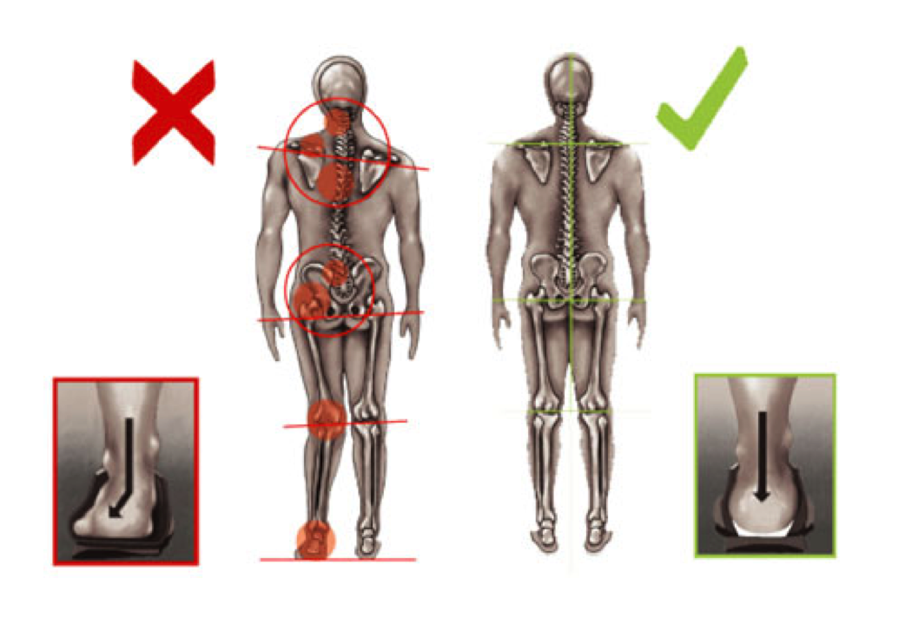
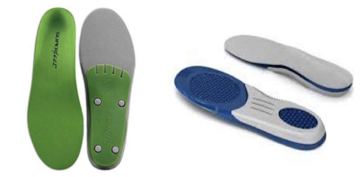

All About Insoles
What are insoles?
An insole is essentially a removable layer inside a shoe that provides extra comfort or support. When you walk, run or stand, you are typically putting much of your weight on the insole of the shoe. Insoles come in many shapes, sizes, and support levels that are designed to fit a variety of different foot types, which is why it’s important to choose an insole that is right for you.
How do insoles help?
When we are on our feet, we put a lot of stress on our joints. Such stress, if not properly absorbed, can cause problems in our ankles, knees, hips, or other body parts as we get older. Insoles can help with this because they provide shock absorption and help better distribute the stress of your weight along your foot. Proper cushioning alleviates joint stress and pain, creating a better, healthier workout for you!
In addition to providing better shock absorption, some insoles provide more support for your foot, especially when it comes to overpronation. Adding an insole typically adds support to an existing shoe, and over time, can help address problems like overpronation because of increased arch support and better heel stabilization. Another common problem many people experience is plantar fasciitis, which is the tearing of the band of tissue on the bottom of the foot. Many therapists recommend wearing a supportive insole as a necessary step in the healing process, since doing so provides more stability around the plantar fascia area.
It takes some time to get used to the extra stability insoles provide, but it’s well worth the wait when you consider how much they will help you in the long run!
Different types of insoles
There are generally three types of insoles you can buy: comfort insoles, support insoles, and custom orthotics.
Comfort insoles are usually made from a soft foam or gel, which in turn helps with shock absorption and cushioning. People who have aching feet from prolonged periods of standing might want to try comfort insoles. Brands such as Spenco have many insoles built for comfort and can be bought over the counter at most running stores.
Support insoles are made of a harder foam and help add support and stability to a shoe, rather than just comfort. These insoles were created to help with issues like overpronation, splayed feet, plantar fasciitis, and other ailments.
Brands like Superfeet create support insoles in different thicknesses and intensities, depending on how much support you need. If you don’t know how much you need, visit a running specialist or a physical therapist to see which kind of support insole is right for you.
Custom orthotics are created to address specific and chronic foot problems. If a comfort insole or support insole won’t do the trick, consider asking a therapist about getting a custom insole molded for your particular foot.
Fitting insoles
Insoles come in a wide range of sizes. When fitting most insoles, it is a good idea to actually try them out. First, put an insole flat on the ground, step on it, and balance on it with one foot. Does your foot feel balanced, or do you wobble around? Also, consider how much your heel is overlapping the heel cup of the insole. If it looks like your heel is overlapping the insole, the insole may not be the correct size for what you need.
Next, put the insoles inside your desired shoes and walk around. If the padding feels just a little bit different than what you’re used to, that’s okay! You might not be used to the extra support yet, but within a couple of uses, you will gradually get used to the extra stability or comfort an insole provides. If the insole doesn’t fit inside of the shoe, you can ask your running specialist to trim the insole so that it fits.
Caring for insoles
Insoles will typically last 9 - 12 months, depending on usage. If your insoles get dirty, you can wash them using some water, detergent, and a toothbrush. It’s recommended that you air dry them as well, since putting them in a dryer will most likely damage the foam and structure of your insole.
Time to get fitted for your insoles!
Now that you know a bit more about insoles, be sure to stop by Fitgeek Sports and get fitted for your very own pair! If you aren’t sure about which insoles you need, then be sure to ask a running specialist for help. We’ll be glad to give you a hand!